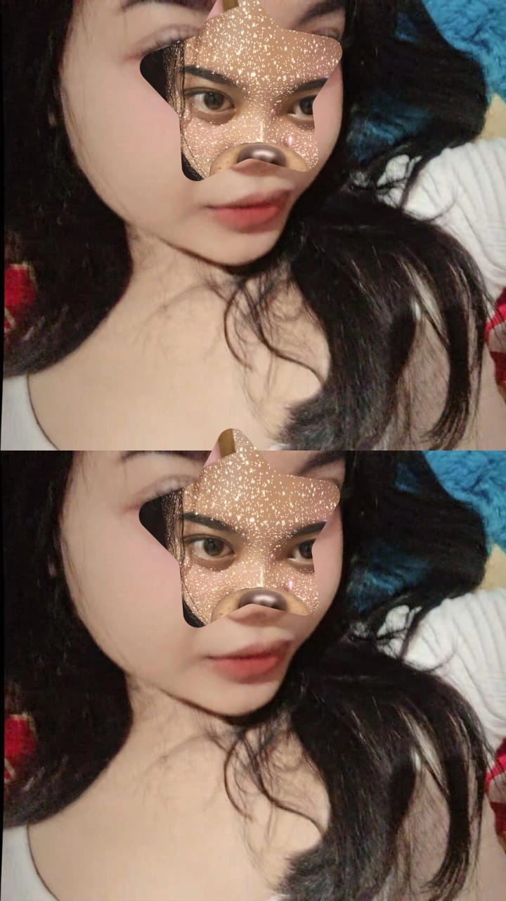

Seseorang yang Berarti
Dedikasi untuk orang spesial Akuu

TANTE AULL
PESAN BUAT TANTE
SEMOGA CEPET SEMBUH YAA TANTEE ❤️❤️
Fakta Menarik
Status:Gatau kagak jelass
Hobi: Gatau juga hobi tantee apaa
Kata favorit: "PRETTT"